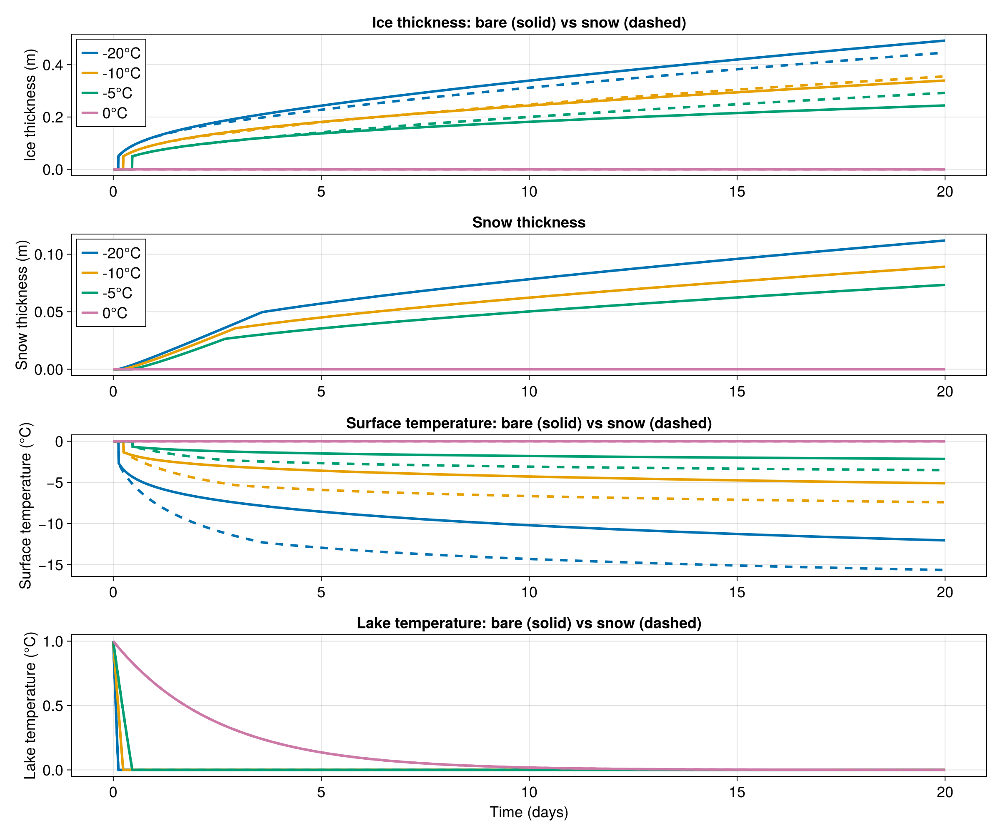
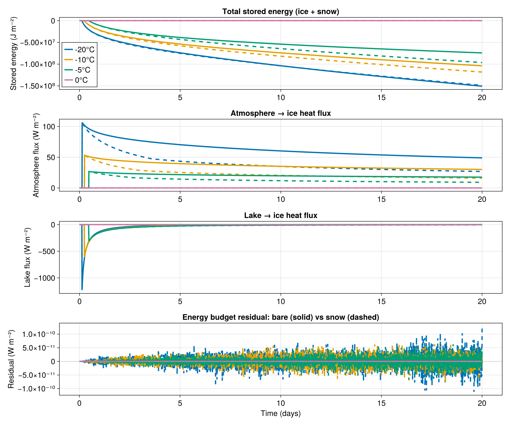

Freezing of a lake example
In this example we simulate the freezing of a lake in winter, comparing bare ice with snow-covered ice. The lake is represented by four grid points that start at 1 C and are cooled down by an atmosphere with temperatures of -20, -10, -5, and 0 C. The snow-covered lake receives light snowfall that insulates the ice, slowing growth.
This example demonstrates how to:
- couple a simple lake model with sea ice thermodynamics,
- use
FluxFunctionfor complex boundary conditions, - add a snow layer with
snow_thermodynamicsandsnowfall, - track energy budgets and verify conservation.
Install dependencies
First let's make sure we have all required packages installed.
using Pkg
pkg"add Oceananigans, ClimaSeaIce, CairoMakie"The physical domain
We generate a one-dimensional grid with 4 grid cells to model different lake columns subject to different atmospheric temperatures:
using Oceananigans
using Oceananigans.Units
using ClimaSeaIce
using ClimaSeaIce.SeaIceThermodynamics: latent_heat
using CairoMakie
grid = RectilinearGrid(size=4, x=(0, 1), topology=(Periodic, Flat, Flat))4×1×1 RectilinearGrid{Float64, Periodic, Flat, Flat} on CPU with 3×0×0 halo
├── Periodic x ∈ [0.0, 1.0) regularly spaced with Δx=0.25
├── Flat y
└── Flat z Atmospheric forcing
The sensible heat flux from the atmosphere is represented by a FluxFunction. We define the atmospheric parameters:
atmosphere = (
transfer_coefficient = 1e-3, # unitless
atmosphere_density = 1.225, # kg m⁻³
atmosphere_heat_capacity = 1004, # J kg⁻¹ K⁻¹
atmosphere_temperature = [-20, -10, -5, 0], # °C
atmosphere_wind_speed = 5, # m s⁻¹
atmosphere_ice_flux = [0.0, 0.0, 0.0, 0.0], # W m⁻²
)(transfer_coefficient = 0.001, atmosphere_density = 1.225, atmosphere_heat_capacity = 1004, atmosphere_temperature = [-20, -10, -5, 0], atmosphere_wind_speed = 5, atmosphere_ice_flux = [0.0, 0.0, 0.0, 0.0])The flux is positive (cooling by fluxing heat upward away from the upper surface) when the atmosphere temperature is less than the surface temperature:
@inline function sensible_heat_flux(i, j, grid, Tᵤ, clock, fields, atmosphere)
Cs = atmosphere.transfer_coefficient
ρₐ = atmosphere.atmosphere_density
cₐ = atmosphere.atmosphere_heat_capacity
Tₐ = atmosphere.atmosphere_temperature[i]
uₐ = atmosphere.atmosphere_wind_speed
ℵ = fields.ℵ[i, j, 1]
Qₐ = atmosphere.atmosphere_ice_flux
Qₐ[i] = ifelse(ℵ == 0, zero(grid), Cs * ρₐ * cₐ * uₐ * (Tᵤ - Tₐ))
return Qₐ[i]
endsensible_heat_flux (generic function with 1 method)Lake model
We also evolve a simple bucket freshwater lake that cools down and freezes from above, generating fresh sea ice (or lake ice in this case). We set the time step of the lake to 10 minutes, which will also be used for the sea ice model:
lake = (
lake_density = 1000, # kg m⁻³
lake_heat_capacity = 4000, # J kg⁻¹ K⁻¹
lake_temperature = [1.0, 1.0, 1.0, 1.0], # °C
lake_depth = 10, # m
lake_ice_flux = [0.0, 0.0, 0.0, 0.0], # W m⁻²
atmosphere_lake_flux = [0.0, 0.0, 0.0, 0.0], # W m⁻²
Δt = 10minutes
)(lake_density = 1000, lake_heat_capacity = 4000, lake_temperature = [1.0, 1.0, 1.0, 1.0], lake_depth = 10, lake_ice_flux = [0.0, 0.0, 0.0, 0.0], atmosphere_lake_flux = [0.0, 0.0, 0.0, 0.0], Δt = 600.0)Bottom heat flux function
We build a flux function that serves three purposes:
- Computing the cooling of the lake caused by the atmosphere
- If the lake temperature is low enough, freezing the lake from above
- Adding the heat flux to the bottom of the ice
@inline function advance_lake_and_frazil_flux(i, j, grid, Tui, clock, fields, parameters)
atmos = parameters.atmosphere
lake = parameters.lake
Cs = atmos.transfer_coefficient
ρₐ = atmos.atmosphere_density
cₐ = atmos.atmosphere_heat_capacity
Tₐ = atmos.atmosphere_temperature[i]
uₐ = atmos.atmosphere_wind_speed
Tₒ = lake.lake_temperature
cₒ = lake.lake_heat_capacity
ρₒ = lake.lake_density
Δ = lake.lake_depth
Δt = lake.Δt
ℵ = fields.ℵ[i, j, 1]
Qᵗ = lake.atmosphere_lake_flux
Qᵇ = lake.lake_ice_flux
Qₐ = Cs * ρₐ * cₐ * uₐ * (Tₐ - Tₒ[i]) * (1 - ℵ)
Tⁿ = Tₒ[i] + Qₐ / (ρₒ * cₒ) * Δt
Qi = ρₒ * cₒ * (Tⁿ - 0) / Δt * Δ # W m⁻²
Qi = min(Qi, zero(Qi))
Tₒ[i] = ifelse(Qi == 0, Tⁿ, zero(Qi))
Qᵗ[i] = Qₐ
Qᵇ[i] = Qi
return Qi
endadvance_lake_and_frazil_flux (generic function with 1 method)Building the bare-ice model
top_heat_flux = FluxFunction(sensible_heat_flux; parameters=atmosphere)
bottom_heat_flux = FluxFunction(advance_lake_and_frazil_flux; parameters=(; lake, atmosphere))
model_bare = SeaIceModel(grid;
ice_consolidation_thickness = 0.05,
top_heat_flux,
bottom_heat_flux)
set!(model_bare, h=0, ℵ=0)Building the snow-covered model
We create a second model with snow. We need separate mutable arrays for the atmosphere and lake state since the flux functions update them as side effects.
atmosphere_snow = (
transfer_coefficient = 1e-3,
atmosphere_density = 1.225,
atmosphere_heat_capacity = 1004,
atmosphere_temperature = [-20, -10, -5, 0],
atmosphere_wind_speed = 5,
atmosphere_ice_flux = [0.0, 0.0, 0.0, 0.0],
)
lake_snow = (
lake_density = 1000,
lake_heat_capacity = 4000,
lake_temperature = [1.0, 1.0, 1.0, 1.0],
lake_depth = 10,
lake_ice_flux = [0.0, 0.0, 0.0, 0.0],
atmosphere_lake_flux = [0.0, 0.0, 0.0, 0.0],
Δt = 10minutes
)
top_heat_flux_snow = FluxFunction(sensible_heat_flux; parameters=atmosphere_snow)
bottom_heat_flux_snow = FluxFunction(advance_lake_and_frazil_flux;
parameters=(; lake=lake_snow, atmosphere=atmosphere_snow))FluxFunction of advance_lake_and_frazil_flux (generic function with 1 method) with parameters @NamedTuple{lake::@NamedTuple{lake_density::Int64, lake_heat_capacity::Int64, lake_temperature::Vector{Float64}, lake_depth::Int64, lake_ice_flux::Vector{Float64}, atmosphere_lake_flux::Vector{Float64}, Δt::Float64}, atmosphere::@NamedTuple{transfer_coefficient::Float64, atmosphere_density::Float64, atmosphere_heat_capacity::Int64, atmosphere_temperature::Vector{Int64}, atmosphere_wind_speed::Int64, atmosphere_ice_flux::Vector{Float64}}}Snow parameters: low conductivity insulates the ice
snow_thermodynamics = snow_slab_thermodynamics(grid)SlabThermodynamics
└── top_surface_temperature: 4×1×1 Field{Oceananigans.Grids.Center, Oceananigans.Grids.Center, Nothing} reduced over dims = (3,) on Oceananigans.Grids.RectilinearGrid on CPULight snowfall: about 5 cm/month of snow at density 330 kg/m^3
snowfall = 6e-5 # kg m⁻² s⁻¹
model_snow = SeaIceModel(grid;
ice_consolidation_thickness = 0.05,
top_heat_flux = top_heat_flux_snow,
bottom_heat_flux = bottom_heat_flux_snow,
snow_thermodynamics,
snowfall)
set!(model_snow, h=0, ℵ=0, hs=0)Running both simulations
Δt = lake.Δt
stop_time = 20days1.728e6Bare-ice simulation:
simulation_bare = Simulation(model_bare, Δt=Δt, stop_time=stop_time)
timeseries_bare = []
function accumulate_bare(sim)
T = sim.model.ice_thermodynamics.top_surface_temperature
h = sim.model.ice_thickness
ℵ = sim.model.ice_concentration
To = lake.lake_temperature
push!(timeseries_bare, (time(sim),
h[1, 1, 1], ℵ[1, 1, 1], T[1, 1, 1],
h[2, 1, 1], ℵ[2, 1, 1], T[2, 1, 1],
h[3, 1, 1], ℵ[3, 1, 1], T[3, 1, 1],
h[4, 1, 1], ℵ[4, 1, 1], T[4, 1, 1],
To[1], To[2], To[3], To[4]))
end
Ei_bare = []
Qa_bare_ts = []
Ql_bare_ts = []
function accumulate_energy_bare(sim)
h = sim.model.ice_thickness
ℵ = sim.model.ice_concentration
PT = sim.model.ice_thermodynamics.phase_transitions
ℰ = latent_heat(PT, 0)
En = - h .* ℵ .* ℰ
push!(Ei_bare, deepcopy(En))
push!(Qa_bare_ts, deepcopy(atmosphere.atmosphere_ice_flux))
push!(Ql_bare_ts, deepcopy(lake.lake_ice_flux))
end
simulation_bare.callbacks[:save] = Callback(accumulate_bare)
simulation_bare.callbacks[:energy] = Callback(accumulate_energy_bare)
run!(simulation_bare)[ Info: Initializing simulation...
[ Info: ... simulation initialization complete (2.458 seconds)
[ Info: Executing initial time step...
[ Info: ... initial time step complete (2.134 seconds).
[ Info: Simulation is stopping after running for 7.929 seconds.
[ Info: Simulation time 20 days equals or exceeds stop time 20 days.Snow-covered simulation:
simulation_snow = Simulation(model_snow, Δt=Δt, stop_time=stop_time)
timeseries_snow = []
function accumulate_snow_ts(sim)
m = sim.model
Tu = m.snow_thermodynamics.top_surface_temperature
h = m.ice_thickness
ℵ = m.ice_concentration
hs = m.snow_thickness
To = lake_snow.lake_temperature
push!(timeseries_snow, (time(sim),
h[1, 1, 1], ℵ[1, 1, 1], Tu[1, 1, 1], hs[1, 1, 1],
h[2, 1, 1], ℵ[2, 1, 1], Tu[2, 1, 1], hs[2, 1, 1],
h[3, 1, 1], ℵ[3, 1, 1], Tu[3, 1, 1], hs[3, 1, 1],
h[4, 1, 1], ℵ[4, 1, 1], Tu[4, 1, 1], hs[4, 1, 1],
To[1], To[2], To[3], To[4]))
end
Ei_snow_ts = []
Qa_snow_ts = []
Ql_snow_ts = []
function accumulate_energy_snow(sim)
m = sim.model
h = m.ice_thickness
ℵ = m.ice_concentration
hs = m.snow_thickness
PT = m.ice_thermodynamics.phase_transitions
ℰi = latent_heat(PT, 0)
ρs = snow_thermodynamics.phase_transitions.density
ℒs = snow_thermodynamics.phase_transitions.reference_latent_heat
En = - ℵ .* (h .* ℰi .+ hs .* ρs * ℒs)
push!(Ei_snow_ts, deepcopy(En))
push!(Qa_snow_ts, deepcopy(atmosphere_snow.atmosphere_ice_flux))
push!(Ql_snow_ts, deepcopy(lake_snow.lake_ice_flux))
end
simulation_snow.callbacks[:save] = Callback(accumulate_snow_ts)
simulation_snow.callbacks[:energy] = Callback(accumulate_energy_snow)
run!(simulation_snow)[ Info: Initializing simulation...
[ Info: ... simulation initialization complete (1.530 seconds)
[ Info: Executing initial time step...
[ Info: ... initial time step complete (2.308 seconds).
[ Info: Simulation is stopping after running for 5.858 seconds.
[ Info: Simulation time 20 days equals or exceeds stop time 20 days.Extracting the time series
t_b = [d[1] for d in timeseries_bare]
h_b = [[d[3*(c-1)+2] for d in timeseries_bare] for c in 1:4]
ℵ_b = [[d[3*(c-1)+3] for d in timeseries_bare] for c in 1:4]
T_b = [[d[3*(c-1)+4] for d in timeseries_bare] for c in 1:4]
L_b = [[d[13+c] for d in timeseries_bare] for c in 1:4]
t_s = [d[1] for d in timeseries_snow]
h_s = [[d[4*(c-1)+2] for d in timeseries_snow] for c in 1:4]
ℵ_s = [[d[4*(c-1)+3] for d in timeseries_snow] for c in 1:4]
T_s = [[d[4*(c-1)+4] for d in timeseries_snow] for c in 1:4]
hs_s = [[d[4*(c-1)+5] for d in timeseries_snow] for c in 1:4]
L_s = [[d[17+c] for d in timeseries_snow] for c in 1:4]4-element Vector{Vector{Float64}}:
[1.0, 0.9419408131943815, 0.8840421439684072, 0.8263035485354038, 0.7687245843356451, 0.71130481003296, 0.65404378551135, 0.5969410718716153, 0.5399962314279909, 0.4832088277047919 … 0.0, 0.0, 0.0, 0.0, 0.0, 0.0, 0.0, 0.0, 0.0, 0.0]
[1.0, 0.9695880450065808, 0.9392601706501181, 0.9090161444709258, 0.8788557346520045, 0.8487787100172648, 0.8187848400297548, 0.7888738947898938, 0.7590456450337096, 0.7292998621310816 … 0.0, 0.0, 0.0, 0.0, 0.0, 0.0, 0.0, 0.0, 0.0, 0.0]
[1.0, 0.9834116609126804, 0.9668691839909734, 0.9503724424386867, 0.9339213098101843, 0.9175156600094172, 0.9011553672889573, 0.8848403062490332, 0.8685703518365692, 0.8523453793442266 … 0.0, 0.0, 0.0, 0.0, 0.0, 0.0, 0.0, 0.0, 0.0, 0.0]
[1.0, 0.9972352768187801, 0.994478197331829, 0.9917287404064479, 0.9889868849683641, 0.9862526100015696, 0.9835258945481595, 0.9808067177081722, 0.9780950586394281, 0.975390896557371 … 0.00035318694837382523, 0.0003522104842303518, 0.0003512367197399315, 0.0003502656474387709, 0.00034929725988371187, 0.0003483315496521748, 0.00034736850934210113, 0.0003464081315718972, 0.00034545040898037726, 0.0003444953342267073]Visualizing ice and snow evolution
set_theme!(Theme(fontsize=18, linewidth=3))
colors = Makie.wong_colors()
atm_labels = ["-20°C", "-10°C", "-5°C", "0°C"]
fig = Figure(size=(1200, 1000))
axh = Axis(fig[1, 1], ylabel="Ice thickness (m)",
title="Ice thickness: bare (solid) vs snow (dashed)")
axs = Axis(fig[2, 1], ylabel="Snow thickness (m)",
title="Snow thickness")
axT = Axis(fig[3, 1], ylabel="Surface temperature (°C)",
title="Surface temperature: bare (solid) vs snow (dashed)")
axL = Axis(fig[4, 1], xlabel="Time (days)", ylabel="Lake temperature (°C)",
title="Lake temperature: bare (solid) vs snow (dashed)")
for c in 1:4
lines!(axh, t_b ./ day, h_b[c], color=colors[c], label=atm_labels[c])
lines!(axh, t_s ./ day, h_s[c], color=colors[c], linestyle=:dash)
lines!(axs, t_s ./ day, hs_s[c], color=colors[c], label=atm_labels[c])
lines!(axT, t_b ./ day, T_b[c], color=colors[c])
lines!(axT, t_s ./ day, T_s[c], color=colors[c], linestyle=:dash)
lines!(axL, t_b ./ day, L_b[c], color=colors[c])
lines!(axL, t_s ./ day, L_s[c], color=colors[c], linestyle=:dash)
end
axislegend(axh, position=:lt)
axislegend(axs, position=:lt)
save("freezing_in_winter.png", fig)
Energy budget analysis
We verify energy conservation for both models. The stored energy is E = -ℰi h ℵ for bare ice, or E = -ℵ(ℰi h + ρs ℒs hs) including snow.
For the snow model, precipitation adds latent heat to the system. The full budget is: dE/dt = -Qa + Ql + Qp, where Qp is the precipitation latent heat flux. We compute Qp from the snow thickness change due to accumulation.
ρs_snow = snow_thermodynamics.phase_transitions.density
ℒs_snow = snow_thermodynamics.phase_transitions.reference_latent_heat
fig = Figure(size=(1200, 1000))
axE = Axis(fig[1, 1], ylabel="Stored energy (J m⁻²)",
title="Total stored energy (ice + snow)")
axA = Axis(fig[2, 1], ylabel="Atmosphere flux (W m⁻²)",
title="Atmosphere → ice heat flux")
axQ = Axis(fig[3, 1], ylabel="Lake flux (W m⁻²)",
title="Lake → ice heat flux")
axR = Axis(fig[4, 1], xlabel="Time (days)", ylabel="Residual (W m⁻²)",
title="Energy budget residual: bare (solid) vs snow (dashed)")
for c in 1:4
Ei_b = [d[c] for d in Ei_bare]
Ei_s = [d[c] for d in Ei_snow_ts]
lines!(axE, t_b ./ day, Ei_b, color=colors[c], label=atm_labels[c])
lines!(axE, t_s ./ day, Ei_s, color=colors[c], linestyle=:dash)
Qa_b = [d[c] for d in Qa_bare_ts]
Qa_s = [d[c] for d in Qa_snow_ts]
lines!(axA, t_b ./ day, Qa_b, color=colors[c])
lines!(axA, t_s ./ day, Qa_s, color=colors[c], linestyle=:dash)
Ql_b = [d[c] for d in Ql_bare_ts]
Ql_s = [d[c] for d in Ql_snow_ts]
lines!(axQ, t_b ./ day, Ql_b, color=colors[c])
lines!(axQ, t_s ./ day, Ql_s, color=colors[c], linestyle=:dash)
dEi_b = (Ei_b[2:end] .- Ei_b[1:end-1]) ./ Δt
dEi_s = (Ei_s[2:end] .- Ei_s[1:end-1]) ./ Δt
Qp = [-ℒs_snow * snowfall * ℵ_s[c][k] for k in 2:length(ℵ_s[c])]
resid_b = dEi_b .- (.-(Qa_b) .+ Ql_b)[2:end]
resid_s = dEi_s .- (.-(Qa_s) .+ Ql_s)[2:end] .- Qp
lines!(axR, t_b[2:end] ./ day, resid_b, color=colors[c])
lines!(axR, t_s[2:end] ./ day, resid_s, color=colors[c], linestyle=:dash)
end
axislegend(axE, position=:lb)
hlines!(axR, [0], color=:gray, linestyle=:dot, linewidth=1)
save("energy_budget.png", fig)
Key observations:
- Snow insulates: ice grows more slowly under snow because the low thermal conductivity reduces the conductive heat flux.
- Snow accumulates only over ice: snowfall only accumulates where ice concentration is positive.
- Energy is conserved: the budget residual is near zero for both the bare-ice and snow-covered models. The snow budget includes the precipitation latent heat flux to account for energy carried by snowfall.
This page was generated using Literate.jl.